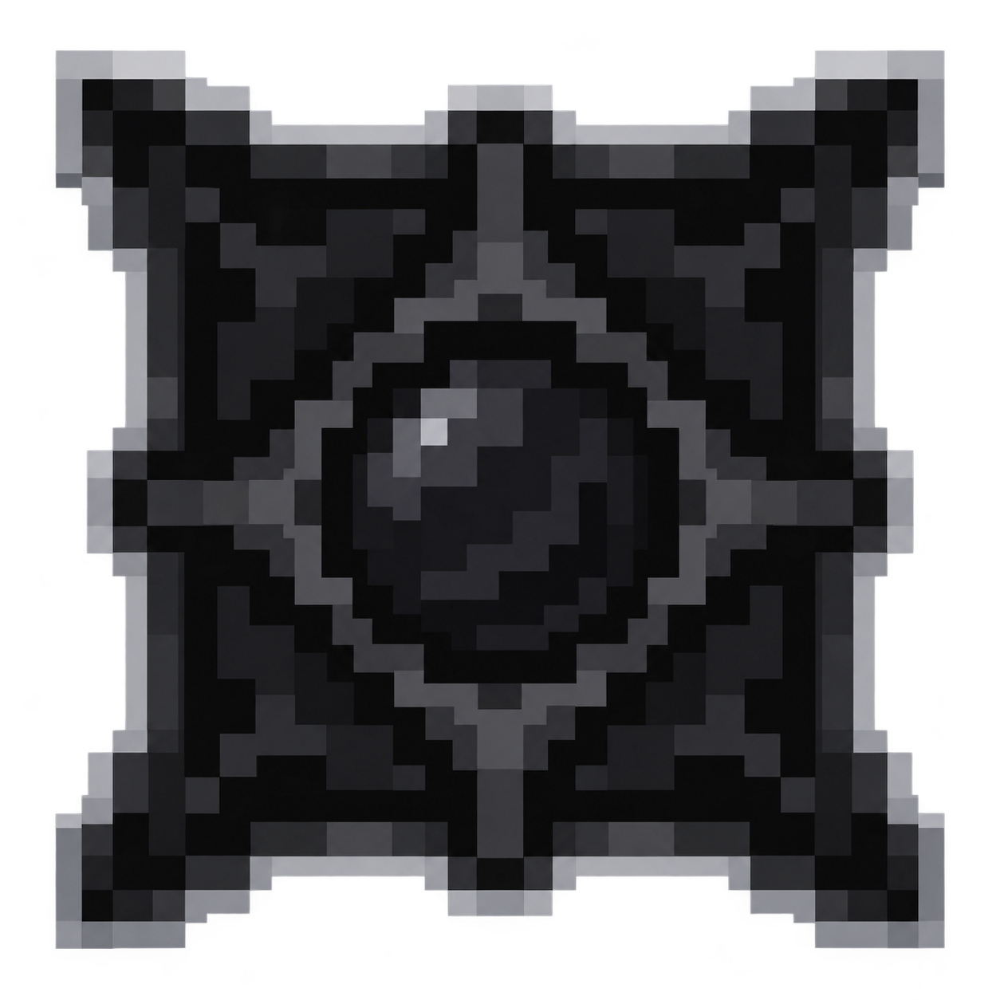

CTE2 최종 도전 0.4.1 · 첫 플레이테스트

검은 강화 오브 + 미사용 정점 지도 → 초월정점 지도 → 원래 지도 장치 입장
전용 도전 지도를 원래 모험 지도 장치에 넣어 입장합니다. 도전 안내인은 지도·오브 교환, 공략 안내, 기록·보상함을 제공합니다. /cte endgame도 안내 화면만 열며 입장권 없이 대기실을 만들 수 없습니다. 클라이언트와 서버 모두 같은 게임 패치를 사용하고 서버를 재시작하세요.
처음 시작하기
기본 입장 조건은 캐릭터 100레벨과 정점 보스 완료입니다. 업데이트 후 정점 보스를 처치하면 기존 협동 보상 범위에 해당하는 참가자에게 완료 기록을 남깁니다. 이전 버전에서 이미 완료한 기록은 자동으로 추정하지 않습니다. 운영자가 게임에 접속하여 /cte endgame unlock 플레이어이름으로 해당 접속자의 기록을 이관할 수 있습니다. 운영자 권한 2 이상이 필요합니다.
- 초월정점은 미사용 원본 정점 지도에 초월정점 지도 강화 오브를 드래그 앤 드롭하여 만듭니다. 검은 오브는 CTE 상점 강화 소모품의 기존 전설 등급 재료 제작 또는 신규 CTE 화폐 + 원본 동전 동시 구매 경로를 이용합니다. 마스터 배낭의 강화 소모품 보관도 지원합니다.
- 4인 공략 지도 2종·개인시련 지도 1종·지도 시련 3종은 안내인의 지도 교환 또는 CTE 상점 지도 카테고리의 전용 도전 지도에서 구매합니다.
- 원래 모험 지도 장치에 전용 지도를 넣습니다. 유물 칸은 비워야 합니다. 방장은 장치에서 8칸 이내, 같은 파티 참가자는 32칸 이내에 모여 장치를 시작합니다. 4인 공략은 실제 플레이어 네 명이 필요합니다.
- 각자 준비, 방장은 방장 시작을 누릅니다. 대기실 준비 제한은 기본 180초입니다. 전장 생성과 전원 이동 성공을 확인한 뒤 파티당 지도 한 장을 소모합니다. 준비 취소·조건 미달·이동 취소 시 지도는 남습니다. 대기 중 해당 장치의 지도 교체·회수·파괴는 제한됩니다.
- 전장에 들어온 뒤 10초의 시작 대기 후 타이머가 흐릅니다. 입장 성공 시 원본 지도 입장 쿨타임도 적용합니다. 서버 기본값은 10초입니다. 전투를 포기하거나 패배한 뒤에는 이미 사용한 입장권을 돌려주지 않습니다.
모든 전용 지도는 고정 전장 조건입니다. 초월정점 변환에 사용한 원본 지도의 등급·접사 강화 효과는 전투에 계승되지 않습니다. 스피드런도 비교 가능한 고정 조건을 사용합니다. 원본 지도에 강화 재료를 더 쓰기 전에 확인하세요. 오브·지도·교환 화면에도 같은 내용을 표시합니다. 전용 지도에 다른 지도 강화 오브를 사용하는 것은 막습니다.
| 전용 지도 | 신규 CTE 청동화 환산 | 원본 구리 동전 환산 |
|---|---|---|
| 4인 공략 각 지도 | 512 | 64 |
| 개인시련 | 256 | 32 |
| 지도 시련 각 지도 | 128 | 16 |
두 종류의 동전을 함께 지불합니다. 파티당 지도 한 장이며 개별 참가자가 각각 구매할 필요는 없습니다. 해금 조건은 구매와 입장 시 모두 확인합니다. 초월정점 지도는 직접 판매하지 않고 원본 정점 지도를 변환합니다. 검은 오브는 기본 전설 강화품 가격(CTE 청동화 환산 4,096 + 원본 구리 환산 512)과 해당 품목 재료 제작법을 사용합니다. 운영자가 품목별로 조정한 경우 실제 교환 화면의 비용을 따릅니다.
도전 안내인 배치
운영자가 안전한 바닥에서 /cte guide spawn을 입력하면 앞쪽에 도전 안내인을 배치합니다. /cte guide remove로 가까운 안내인을 제거합니다. 두 명령은 운영자 권한 2 이상이 필요합니다. 기존 세이브에 자동 배치하지 않습니다. 안내인은 이동·밀림·일반 피해를 막고 원래 주민 거래 대신 전용 안내 화면을 엽니다. 일반 참가자는 우클릭만 하면 됩니다. 별도 NPC 플러그인은 필요하지 않습니다.
| 콘텐츠 | 인원·선행 조건 | 기본 체력·구성 | 공략 |
|---|---|---|---|
| 초월정점 · 잿빛 왕관 | 1~4명, 정점 완료 | 1인 1억 8천만, 2인 3억 2천4백만, 3인 4억 6천8백만, 4인 6억 1천2백만 | 체력 66%·33%에서 보호막. 소환되는 파수꾼 둘을 처치하면 해제. 큰 피해로 단계를 건너뛸 수 없음 |
| 4인 공략 · 사슬의 용광로 | 실제 플레이어 4명, 전원 초월정점 완료 | 7억 | 체력 50%에서, 이후 일정 간격으로 네 모서리 발판 협동. 15초 내 한 명씩 다른 발판에서 2초 유지. 실패하면 전장 충격파 |
| 4인 공략 · 일식의 쌍성 | 실제 플레이어 4명, 전원 초월정점 완료 | 두 보스 각 3억 5천만 | 발판 협동 + 한 보스가 쓰러지면 30초 내 나머지 처치. 두 보스의 체력을 함께 조절 |
| 개인시련 · 열 개의 문 | 혼자, 정점 완료 | 10단계 연속. 일반 적 각 200만 × 단계, 5·10단계 보스 추가 | 짝수 단계는 중앙 11칸 밖에서 침식 피해. 적 전멸 시 다음 단계. 한 번 사망하면 종료 |
| 지도 시련 · 폐허 회랑 | 혼자, 정점 완료 | 세 구역, 구역당 근접 파수꾼 30마리 동시 등장 + 마지막 보스 1마리 | 각 구역 전멸 후 색 발판으로 이동 |
| 지도 시련 · 가시 정원 | 혼자, 정점 완료 | 세 구역, 구역당 거미 30마리 동시 등장 + 마지막 보스 1마리 | 각 구역 중앙의 세로 띠를 피해 이동 |
| 지도 시련 · 망각의 묘실 | 혼자, 정점 완료 | 세 구역, 구역당 원거리 파수꾼 30마리 동시 등장 + 마지막 보스 1마리 | 주기적인 중앙 파동에 주의 |
기존 파괴수·변명자·좀비·스켈레톤·거미 모델과 기본 AI에 전용 능력치·보호막·전장 기믹을 붙인 구현입니다. 보스는 원본 정점 몬스터 등급의 군중제어 저항을 사용합니다. 전장은 새 차원 cte2_multiplayer:endgame 안에 분리되며, 기존 세이브의 지형을 공사하지 않습니다.
표시와 규칙
- 폭발 예고는 붉게 칠해진 바닥과 가운데 발광 블록으로 표시하며 3초 뒤 폭발합니다. 실제 피해 반경은 3.5칸이고, 바닥은 피해 원과 닿는 블록 전체를 표시하므로 보수적으로 조금 넓습니다. 붉은 바닥 바깥으로 충분히 벗어나세요. 파티클을 최소로 설정해도 바닥 표시는 유지됩니다. 폭발·구역 완료·도전 종료 시 원래 바닥과 발판으로 복구합니다.
- 화면 상단에 현재 전장·구역·남은 적·귀환 방법을 표시합니다. 구역을 모두 정리하면 목표 발판의 색·방향·거리로 안내가 바뀝니다. CTE 상점의 도전·귀환 버튼 또는
/cte endgame으로 현재 도전 안내와 포기·귀환 버튼을 열 수 있습니다. - 지도 시련 세 종류 모두 구역당 일반 몬스터 30마리가 한 번에 등장합니다. 세 구역 합계 일반 90마리와 마지막 보스 1마리입니다. 구역별 전멸과 발판 이동 방식은 유지합니다.
- 원본 귀환진주도 전용 전장에서 사용할 수 있습니다. 손이나 보조 손에 들고 사용하면 입장 전 위치로 돌아가며 도전을 포기합니다. 바닥을 바라보고 사용해도 됩니다. 실제 귀환이 성공한 뒤 진주 한 개를 소모하며, 이동이 거부되면 진주와 저장된 귀환 위치를 유지합니다. 파티 도전 중 한 명이 귀환하면 파티 도전 전체가 종료되고 전원 복귀합니다. 진주 없이도
/cte endgame leave를 쓸 수 있고 운영자 권한은 필요 없습니다. - 발판은 중앙 금색 블록 주변 2.5칸 안에서 바닥에 서 있어야 인정됩니다. 용병·소환수는 네 사람이나 발판 인원을 대신하지 못합니다.
- 지도 시련은 왼쪽 방 → 가운데 방 → 오른쪽 방 순서입니다. 각 방 적을 모두 처치한 뒤 첫 방 빨강, 둘째 방 초록, 마지막 방 파랑 표식의 금색 발판을 밟습니다.
- 4인 보스의 공용 부활은 기본 4회이며, 사망자는 8초 후 복귀합니다. 부활 대기 중 본인과 소환수의 공격은 제한됩니다. 부활을 사용한 공략은 완료 보상을 받을 수 있으나 순위에는 등록하지 않습니다.
- 초월정점·개인시련·지도 시련은 사망 시 종료합니다. 전장에서의 사망은 취소하고 기존 입장 위치로 복귀시키는 방식입니다. 실제 4인 플레이에서 다른 모드의 사망 처리와 함께 확인할 항목입니다.
- 전장 밖으로 이동하거나 캐릭터·게임 모드를 변경하면 공략을 종료합니다. 전장에서는 건축·블록 파괴·버킷 사용·아이템 버리기를 제한합니다. 전장 몬스터의 기본 전리품 생성은 막고 완료 보상으로 지급합니다.
- 접속이 끊겨도 시간은 계속 흐릅니다. 기본 120초 안에 재접속하면 복귀하며, 초과하면 종료합니다. 참가자 교체는 허용하지 않습니다.
/cte endgame leave로 포기할 수 있습니다. - 서버가 정상 종료되면 공략을 취소하고 참가자를 돌려보냅니다. 강제 종료된 진행 중 공략은 이어서 복원하지 않습니다. 다음 접속 때 저장된 복귀 위치를 확인하고, 위치가 없으면 오버월드 생성 지점으로 보냅니다.
보상과 기록
완료하면 보스 포인트 + 원본 Lightman's Currency 동전을 보상함에 보관합니다. 도전이 끝난 뒤 보상 받기를 누릅니다. 보스 포인트와 동전 지급, 수령함 비우기는 기존 거래 복구 처리 안에서 함께 처리합니다. 인벤토리 공간이 부족하면 보상함을 유지합니다.
| 콘텐츠 | 기본 보스 포인트 | 원본 동전 |
|---|---|---|
| 초월정점 | 100 | 구리 환산 200 |
| 4인 보스 각각 | 참가자당 160 | 참가자당 구리 환산 200 |
| 개인시련 10단계 완주 | 80 | 구리 환산 200 |
| 지도 시련 각각 | 25 | 구리 환산 200 |
콘텐츠마다 계정별 보상 대기시간은 기본 30분입니다. 주간 첫 완료에는 보스 포인트 50을 추가합니다. 보상 대기 중에도 재도전과 기록 갱신이 가능합니다. 완료 시 최근 60초 안에 이동·공격·협동 발판 참여가 있어야 보상함에 추가합니다. 순위에 따른 추가 전투 능력치 보상은 없습니다. 초월정점 완료 기록은 4인 공략을 해금합니다.
주차는 한국 시간 월요일 0시에 바뀝니다. 입장 대기실을 만든 주차·패치 버전을 기준으로 지도 시련 배치를 고정합니다. 기록은 콘텐츠·인원수·주차·게임 버전·서버 설정 지문별로 분리합니다. 서버 지연이 누적되거나 부활을 사용한 공략은 순위에서 제외하되 완료 보상 판정은 유지합니다. 파티 기록은 파티별 한 줄로 저장하고, 개인 최고 기록도 남깁니다. 공개 순위는 항목별 상위 20개를 저장합니다.
운영 설정
config/cte2_endgame.json을 편집하고 서버를 재시작합니다. 서버 설정이 판정 기준입니다. 일반 상점·강화 제작법·두 종류 화폐의 결제 규칙은 기존 설정을 사용합니다.
| 설정 | 기본값 | 의미 |
|---|---|---|
| enabled | true | 도전 입장 허용 |
| minLevel / requirePinnacle | 100 / true | 최소 레벨 / 정점 완료 필요 |
| maxSessions | 30 | 동시 전장 상한, 1~30 허용. 30명 성능 보장을 뜻하지 않음 |
| readySeconds / reconnectSeconds / limitSeconds | 180 / 120 / 1200 | 준비 / 재접속 / 공략 제한시간 |
| raidRevives | 4 | 4인 공략 공용 부활 횟수 |
| rewardCooldownSeconds | 1800 | 같은 콘텐츠 계정별 보상 대기시간 |
| ascendedHealth / forgeHealth / eclipseHealth | 180000000 / 700000000 / 700000000 | 초월정점 1인 기준 / 용광로 총 / 쌍성 총 체력 |
| soloBaseHealth / speedWaveHealth | 2000000 / 2000000 | 일반 몬스터 단계별 기본 체력 |
| mechanicDamage | 2500 | 기믹의 CTE 전투 피해 기본값. 방어·보호막 등 원본 피해 처리 적용 |
| bossPoints / raidBossPoints | 100 / 160 | 초월정점 / 4인 보스 기본 보상 |
| soloBossPointsPerStage / speedBossPoints | 8 / 25 | 10단계 완주 보상의 단계당 배수 / 지도 시련 보상 |
| raidMapBronze / raidMapNativeCopper | 512 / 64 | 4인 공략 지도 한 장의 두 화폐 가격 |
| soloMapBronze / soloMapNativeCopper | 256 / 32 | 개인시련 지도 한 장의 두 화폐 가격 |
| speedMapBronze / speedMapNativeCopper | 128 / 16 | 지도 시련 지도 한 장의 두 화폐 가격 |
| nativeCopper / weeklyBonusBossPoints | 200 / 50 | 원본 구리 환산 / 주간 첫 완료 추가 보상 |
체력은 몬스터당 최대 14억으로 제한합니다. 정수 체력·보호막 처리의 범위를 넘기지 않기 위한 상한입니다. 기존 입장 조건과 파티 제한을 없애는 테스트용 우회 명령은 배포하지 않습니다. 기록 이관 명령은 정점 완료 표시만 보완합니다.
검증 범위와 오픈 전 확인
규칙 자동 검사 98개와 실제 Forge 47.4.23 전용 서버에 필수 의존 모드를 넣은 격리 검사 725개를 통과했습니다. 격리 검사에서는 전장 차원 등록, 7개 항목 생성, 개인시련 10단계·지도 시련 3구역의 체력 연동, 단계 보호막, 피해 취소, 종료 정리 등을 확인했습니다. 검은 오브 변환, 전용 지도 등록·구매·두 화폐 거스름돈, 안내인 배치·피해 보호도 검사했습니다. 네 개의 서버 플레이어 객체를 생성하여 장치 예약·준비·전원 이동·한 장 소모·복귀, 이동 취소 시 지도 보존을 확인했습니다. 이는 실제 클라이언트 네 명의 접속 시험과 다릅니다. 원본 귀환진주와 보조 손·바닥 우클릭, 이동 취소 시 진주·위치 보존과 재시도, 운영자 권한 없는 귀환, 세 시련의 모든 구역 30마리 동시 생성, 폭발 바닥의 표시·범위·원상 복구와 서버 전송용 목표 데이터도 검사했습니다. 기존 오브·거래·환산·프리셋 회귀 검사도 통과했습니다.
실제 네 사람의 전투와 30명 동시 부하 검증은 아직 하지 않았습니다. 첫 버전은 플레이테스트용이며 공략 시간·기믹 피해·보상은 실제 참가자의 기록으로 조정해야 합니다. 본 서버 오픈 전에 별도 테스트 월드에서 아래를 확인하십시오.
- 네 사람이 실제 MNS 파티로 참가·준비·발판·공용 부활을 수행하는지, 용병과 소환수의 공격이 정상인지.
- 접속 종료·재접속·포기·서버 재시작 때 복귀 위치와 보상함이 유지되는지.
- 한국어 메뉴의 화면 크기·글자 잘림, 공략 링크, 보상 인벤토리 부족 처리.
- 여러 전장의 동시 생성, 지속 전투의 서버 틱 시간과 메모리, 저장·백업 시간.
- 서버 강제 종료를 포함한 보상 수령 복구. 검사에는 복제한 테스트 월드를 사용하고 실제 운영 월드를 강제로 종료하지 마십시오.